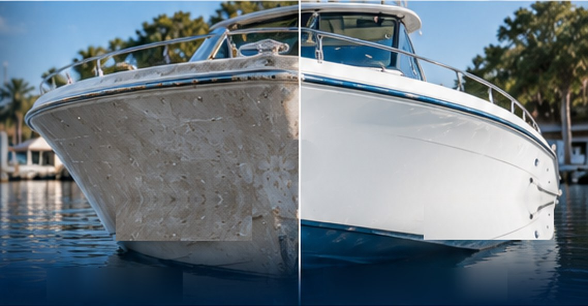
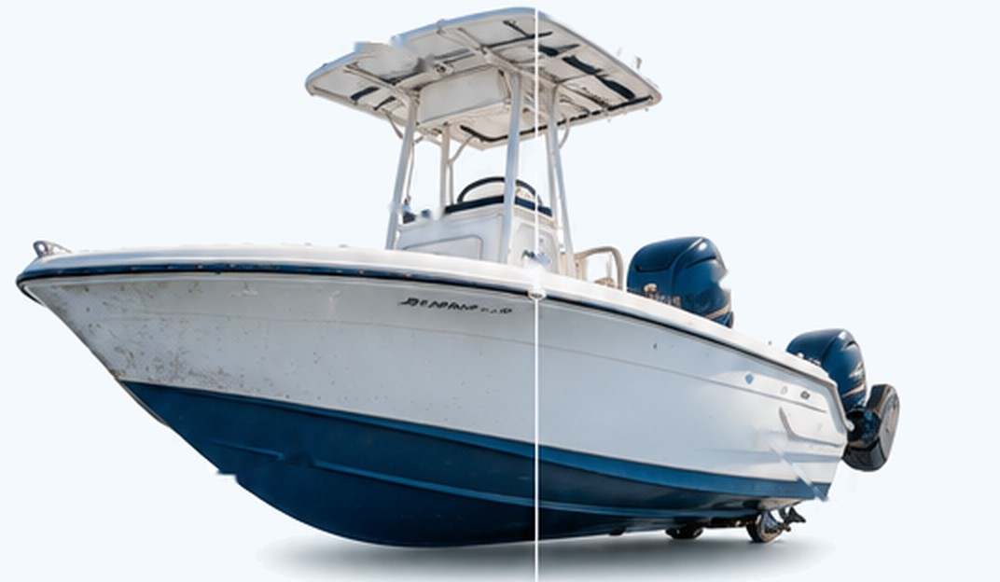
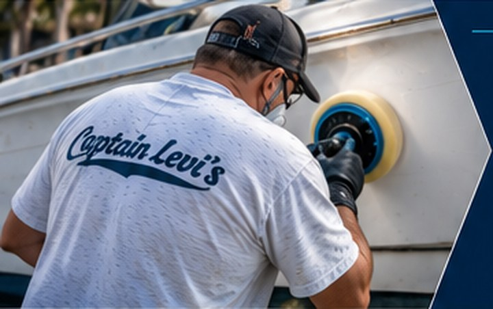

From oxidation and chalky gelcoat to stains, scratches, and fading, our full boat restoration service brings back your boat’s original color, gloss, and clarity. We make your boat look and feel new again.
Our full boat restoration service goes beyond a simple wash. We remove oxidation, stains, scratches, and discoloration using professional compounding, polishing, and finishing techniques to restore your boat’s original color, gloss and depth — inside and out.


We use proven marine-grade compounds, polishes, and techniques to safely restore your boat’s finish and protect it for the long term.
We evaluate the condition of your boat’s gelcoat, stains, and problem areas to create the best approach.
Remove oxidation, stains and surface imperfections using professional marine compounds.
Refine the finish to restore gloss, clarity and depth.
Apply a high-quality wax or ceramic coating to keep your boat looking new longer.
See the dramatic difference a professional restoration can make. From faded and chalky to deep, glossy, and like new.
Faded and chalky to deep, glossy finish.
Stains, scuffs and oxidation removed.
Clean, bright and like new.
Every boat is different, but our full restoration typically includes:
With over 50 years of fiberglass repair experience, we deliver high-quality results that keep your boat looking its best. From minor oxidation to full restorations, we’re the team boaters across Tampa Bay trust.
Most full restorations take two to five days, depending on the boat’s size, how heavy the oxidation is and how many surfaces are included. We give you a timeline with the quote.
It removes surface oxidation, chalking and most stains. Very deep stains, or gelcoat worn through to the laminate, may need gelcoat repair or refinishing — we point those out during the inspection.
Yes. Every restoration finishes with protection: a high-quality marine wax, or a ceramic coating if you want it to last longer. We’ll explain the difference and the upkeep for each.
Compounding and polishing bring back the color that is already in your gelcoat, so there is usually nothing to match. Where the gelcoat is too far gone, we tint new gelcoat to your hull.
It depends on the boat’s length, its condition and which surfaces you want done. Send us photos or book an inspection and we’ll give you a firm quote before any work starts.
Get a free quote or talk directly with Captain Dave about your boat.
Want your whole boat brought back to a like-new finish, need a quote, or ready to schedule? Fill out the form or give us a call — we’ll get back to you as soon as possible. Your boat deserves the best, and we’re here to make it happen.
Tell us a little about your project and we’ll get back to you quickly.